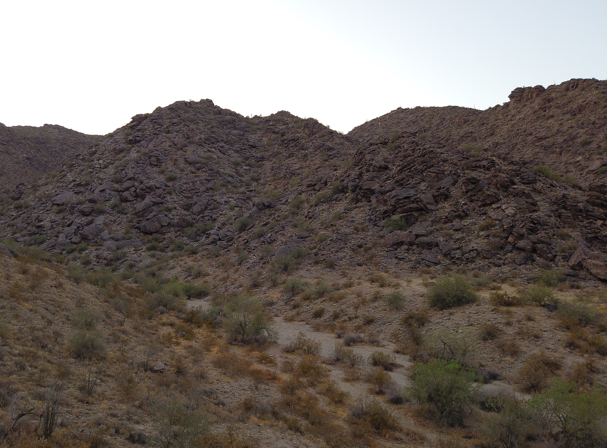
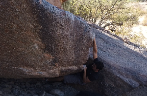
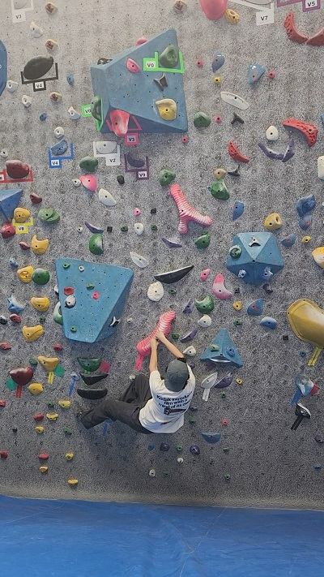

South Mountain, Ahwatukee, Arizona
Introduction to Climbing!
Welcome to Arizona Valley Climbing!
Our goal is to introduce climbing to new people in the Arizona Valley
and direct veteran climbers to new or existing routes in the area. Located
near the top of the website are directories for your needs. Lessons to introduce newcomers
are located in the Lessons tab. It will have information on gear, climbing lingo, safety,
and many more. We hope you enjoy your stay. Get out there and Climb!
Featured Route

The Tongue V2
Sit start on right side with your heel scummed in the crack. Move around the tongue using the large ledge at the lip of the tongue. Top out. This is one of the most climbed problems at South Mountain. It is the very distinct feature behind the warm up wall that is often described as: the lizard head, iguana head, alligator head or tongue. It sits about 3 or 4 feet off the ground and is a great low ball!

Climbing at Focus Climbing Center!